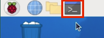

Astro Pi Orbit¶
The astro_pi_orbit library provides functionality to assist Astro Pi Mission Space Lab participants in working with orbital data. Functions are provided to do the following:
- Find the ISS's current location.
- Load and view the standard
de421.bspandde440.bspephemeris files, which contain the precise positions of the planets and other celestial bodies. - Load the ISS's latest trajectory.
The astro_pi_orbit library is useful for participants of all levels of experience:
new participants can use astro_pi_orbit to get the ISS coordinates, which is helpful for things like geotagging pictures. For more advanced uses, the library unlocks access to several ephemeris and two-line element files (that describe the position of the celestial bodies and the ISS) that can be used to perform more complex astronomical calculations and analyses. These files are normally too big to include in Mission Space Lab submissions, but the library makes them readily available.
Installation¶
The installation steps differ depending on your operating system.
Raspberry Pi OS¶
You can install astro_pi_orbit using pip. From Raspberry Pi OS Bookworm onwards, you need to install external Python dependencies into a 'virtual environment' that you create on a per project basis. This 'virtual environment' (venv for short) prevents you inadvertantly overwriting the Python dependencies needed by the operating system when you install third party libraries, such as astro_pi_orbit.
To install the astro_pi_orbit library into a venv called astro_pi_orbit-venv, follow the steps below:
-
Open a terminal window on your Raspberry Pi.

-
curl -L --fail https://astro-pi.github.io/astro-pi-orbit/install.sh | bash
Other operating systems¶
Install astro_pi_orbit using pip:
pip install astro_pi_orbit
Usage¶
For common uses (recipes), see the recipes page. Otherwise, for extensive API documentation, head to the API page.
Credits¶
- Brandon Rhodes, the writer of the Python Skyfield library which is wrapped by
astro_pi_orbit.